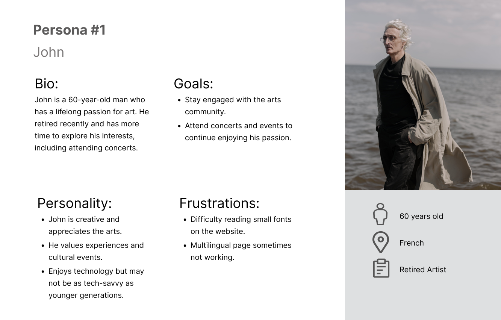

What is wordpress.org theme?
Demostration through Real project
Homepage that I created by Theme in my local device, could demostrate a basic conception of how the wordpress.org theme work
- Add user: author / editor / adminstrator / etc
- Dashboard of user: how to edit
- My code: theme constructure by php files
- Frontend look: the website page
Enhancing UI/UX OJMR Website
visual design| UX | | UI | Figma
Introduction
Welcome to the collaborative effort aimed at elevating the user experience and interface design of the OJMR website. Our project focuses on enhancing the overall usability, visual appeal, and functionality of the current website to provide users with a more seamless and enjoyable experience.
UI/UX Anylysis
Conduct a thorough evaluation of the current website's user interface and experience, identifying strengths, weaknesses, and areas for improvement.
01
- Constructure & Hierachy: The nav bar not clear enough and there is no footer for the web pages.
- Color contrast: Adjust the background color to ensure sufficient contrast with text, enhancing readability and visual appeal.
- Fonts size: Increase paragraph font size for improved legibility and a more comfortable reading experience.
- Text space: Optimize line height to provide adequate spacing between lines, enhancing overall text readability.
- White space: Increase margin under h2 headings and adjust text placement to create a balanced white space, preventing text from being too close to the edges.
- Text align: Consider aligning text to the left to mitigate potential readability issues associated with a right-aligned layout.

02
- Interactive Enhancement: Make the logo clickable to improve user engagement and provide a consistent navigation experience.
- UI Layout Refinement: Consider implementing a card or icon-based layout for improved visual appeal and consistency in color usage across the interface.
- Enhance Descriptive Content:: Optimize line height to provide adequate spacing between lines, enhancing overall text readability.
- white space: Expand and organize content sections to avoid overcrowding, ensuring a clear and informative presentation for users.
- Text Alignment Improvement: Adjust text alignment to enhance readability and mitigate any difficulties users may face when consuming the content.
03
- Visual Appeal:Integrate an image to break up text and enhance visual appeal, making the content more engaging for users.
- Layout Enhancement:Reorganize the layout for a cleaner and more organized appearance, addressing the current perception of disorder.
- Text Length Optimization: Break up lengthy text across the screen into concise sections for better readability and user comprehension.
- Font Weight Emphasis: Adjust font weight strategically to highlight important content and guide users' attention to key information.
04
- Social Media Integration: Include social media icons for enhanced connectivity, fostering a seamless connection between the website and various social platforms.
- Location Awareness:Integrate a map feature to assist users in easily locating the physical address, improving user experience and providing valuable information.
- Layout Optimization: Streamline and optimize the layout to avoid wastage of space on the right side, ensuring a more visually balanced and aesthetically pleasing design.
- Interactive Contact Form: Implement a user-friendly contact form to facilitate easy communication, encouraging user interaction and inquiries.
- Footer Inclusion:Add a footer to the front page for a cohesive and complete user experience, providing essential navigation links and information.
User personas
Develop detailed user personas based on research findings to understand the diverse needs, behaviors, and expectations of the target audience.
improvement plan
Formulate a comprehensive plan outlining specific strategies and design changes to address identified issues and enhance the overall UI/UX.
Figma Updateprototype
Create an interactive prototype incorporating proposed design enhancements, allowing stakeholders to visualize and provide feedback on the planned improvements.
Before & after
check in FigmaSitemap
Basic structure of the whole website, include the pages that will show, and clear the hierachy. Also include what sections will present in home page.
Detail in Figma
Platform
Proposal about which platform and which way should be chosen depend on the client(OJMR)'s situation
Pure Coding (HTML and CSS):
Advantages:
- Full Control: You have complete control over the website's design, structure, and functionality.
- Optimized Performance: Since you're coding from scratch, you can optimize the performance based on your specific needs.
- Unique Design:Your website can have a completely unique and custom design tailored to your brand.
Disadvantages:
- Technical Expertise Requires in-depth coding knowledge in HTML and CSS.
- Time-Consuming: Developing from scratch can be time-consuming compared to using pre-built solutions.
- Maintenance:Regular maintenance and updates need to be done manually.
WordPress.com/Shopify Template Way:
Advantages:
- Ease of Use:No coding knowledge required for basic setup and content management.
- Quick Deployment: Templates allow for quick website creation.
- Managed Hosting:Hosting and maintenance are often taken care of by the platform.
Disadvantages:
- Limited Control: Limited customization options compared to coding from scratch.
- Template Constraints: May face limitations in design and functionality based on the chosen template.
- Dependency on Platform:Limited control over hosting and potential platform restrictions.
WordPress.org Theme Development:
Advantages:
- Flexibility:Allows for a balance between control and ease of use.
- Customization: Can create a unique design while leveraging the WordPress CMS.
- Plugin Compatibility:Supports plugins for additional features and functionalities.
Disadvantages:
- Learning Curve: Requires a certain level of coding knowledge, especially in PHP and WordPress structure.
- Maintenance: Ongoing maintenance and updates may be needed.
- Potential Bugs:Custom themes can introduce bugs, requiring periodic debugging.
Recommendation:
The WordPress.org theme development approach provides a good balance between control and user-friendliness. It allows for customization, plugin integration, and a user-friendly content management system while maintaining control over the website's structure and design. However, it does require some coding knowledge and ongoing maintenance. If a highly customized and unique website is essential, investing in WordPress.org theme development is a wise choice. Ultimately, the choice depends on the specific needs, technical expertise, and preferences of the website owner (OJMR).